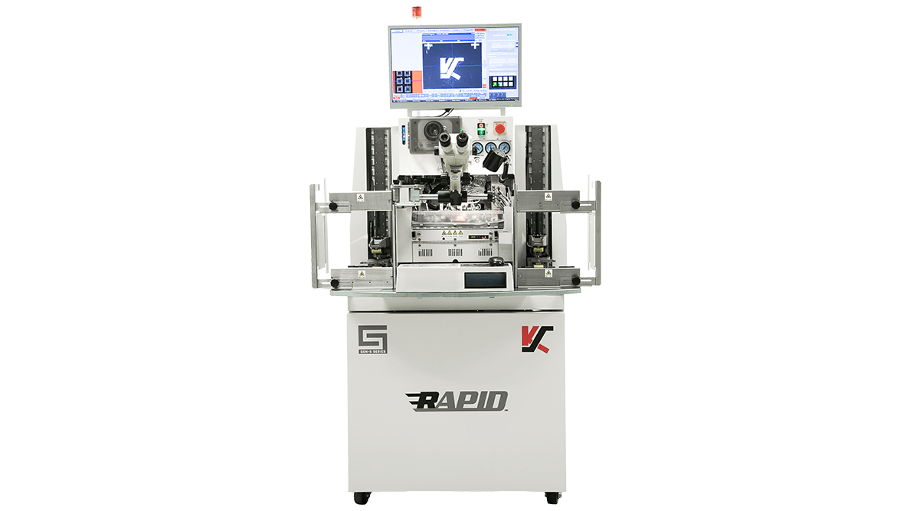
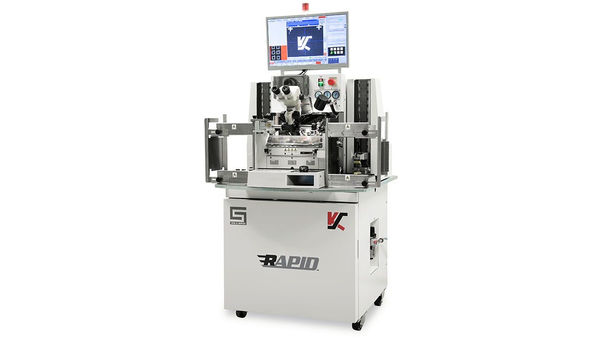
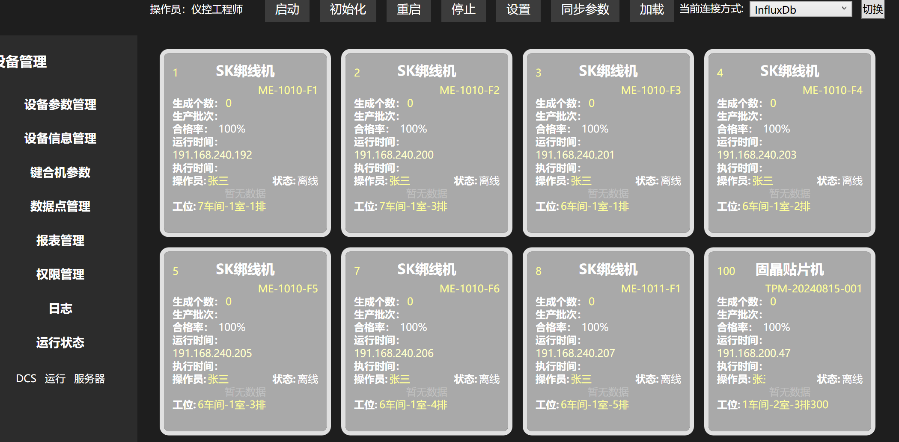
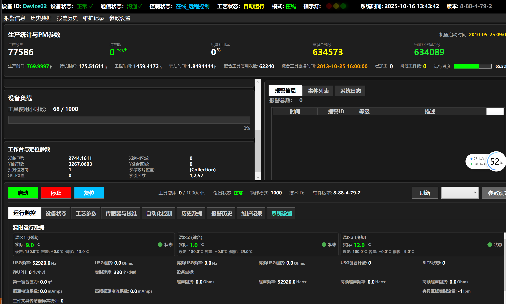

芯片制造行业项目
技术栈 · 发展历程
S&K打线机专用上位机数据采集系统（SECS协议版）
项目背景：开发适配 S&K 绑线机的智能化上位机控制系统，满足半导体生产高精度、高稳定性要求，实现设备与工厂系统标准化对接。
个人职责：
1. 独立完成上位机系统架构设计与开发：包括 UI 界面（设备状态、参数曲线、报警信息展示）、SECS/GEM 协议通信模块、数据采集与存储模块；
2. 实现 PLC 与设备的双向交互，完成工艺参数配置、设备启停控制、异常停机等功能；
3. 优化多线程并发处理能力，解决数据采集延迟问题，保障系统实时性；
4. 编写完整的软件文档与技术说明，配合测试团队完成系统调试。
S&K打线机上位机系统界面




半导体设备上位机系统
项目背景：为半导体生产设备开发上位机控制系统，实现设备自动化控制和生产数据管理。
技术职责：
1. 协议实现：开发SECS/GEM协议通信模块，实现与半导体设备的标准化通信；
2. 界面开发：使用WPF开发设备控制界面，包括参数设置、状态监控、报警显示；
3. 数据采集：实现生产数据的实时采集、存储和分析功能；
4. 系统集成：集成Modbus协议，实现与外围设备的通信；
5. 测试优化：进行系统性能测试和优化，确保高可靠性运行。
半导体光模块MES在制品工序管控模块
项目背景：解决多型号混线生产流程不规范、工序漏检、设备数据孤岛问题，实现光模块生产全工序标准化管控与数据追溯。
个人职责（上位机核心关联）：
1. 主导工艺建模与流程设计：梳理光模块全系列加工流程，设计工序节点与流转规则，支撑上位机系统逻辑流程开发；
2. 搭建多设备数据接口体系：开发 Modbus/TCP、OPC UA 等多协议接口，对接 15+ 类设备，实现数据自动采集与上传；
3. 上位机功能开发：参与 WPF 车间客户端 UI 设计与逻辑实现，完成设备状态监控、工艺参数展示、工序合格判定等功能；
4. 测试与优化：对系统进行全面测试，分析并修复 BUG，优化数据采集与交互性能；
5. 文档编写：撰写技术设计文档、接口说明书与操作手册。
新工厂10条产线光模块MES工序管控模块
项目背景：支撑新工厂产能扩张，实现 10 条光模块生产线的标准化管控，对接 ERP 与客户系统，满足大规模生产数据交互需求。
核心职责：
1. 主导 10 条产线 MES 上位机对接落地，设计多产线并行生产的 UI 界面与逻辑流程；
2. 开发多协议数据采集接口，对接 80+ 台套设备，实现实时数据采集与上传；
3. 定制化开发客户导向功能模块，完成上位机与 ERP、客户系统的数据交互；
4. 编写技术文档与用户培训手册，协助团队完成系统上线。
系统运行演示
StationSCADAMonitoringSystem/scanda_station4.gif)